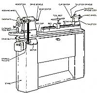
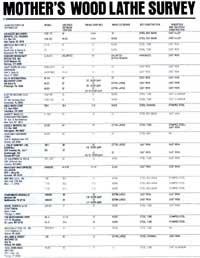

When compared with other tools in the home workshop, the wood-turning lathe is unique by virtue of its singular purpose: It's designed to allow rapid and symmetrical shaping or carving by rotating the workpiece on a driven center. Don't, however, assume that the lathe is too limited in function to be useful. Tackling even a moderately intricate project without one would be a major chore, and a well-equipped machine is flexible enough to handle a wide variety of turning tasks, as well as shaping, sanding, and finishing jobs.
A cursory look at any wood lathe will reveal the major components that all lathes share. Probably most important is the bed, which determines the center-length capacity of the tool and establishes how true it will be. This foundation supports the headstock, which contains the spindle drive mechanism, and the tailstock, which secures the workpiece opposite the driven spindle and adjusts laterally to suit the length of the work involved. A tool rest, also fastened to the bed, supports the hand-held gouges and chisels used in turning and can be slid along the bedways to face the work at any point. Though some lathes are designed as bench-top models, most manufacturers offer stands or cabinet bases to make their machines freestanding.
Lathes are sized by the maximum diameter of work they're able to turn. This dimension, which is known as the swing, is determined by the height of the drive spindle above the bed, or the radius of the swing. The tool's centerlength capacity-or distance between headstock and tailstock centers-is limited by the length of the bed, and necessarily must be a foot or more shorter, since the headstock and tailstock occupy some of the bedways' space.
If your work is going to be limited to hobby turning or simple crafts, you probably won't need anything more than a moderatesized, light-duty bench lathe. As you set your sights on more intricate projects, such as furniture components, large bowls, and turned containers, you'll appreciate the features and convenience of the larger, base-mounted, stationary machines.
As with any major purchase, there are a number of things to be aware of if you're doing some serious shopping. One nice feature offered by about half the manufacturers is an outboard turning capability, which allows the user to mount a faceplate on the outer end of the headstock to accommodate a larger-diameter workpiece than would normally fit over the bed. This is usually achieved by extending the drive spindle through that end and machining it with a left-handed thread . . . though several firms do save that extra tooling step and the cost of a separate faceplate by designing their headstocks to swivel, or slide to the opposite end of the bed.
Too, most cast-iron-bed lathes are available with a gap-bed feature-a recess built into the bed beneath the drive spindle which allows inboard faceplate turning of a larger-diameter piece than would fit over the bedways.
Because the various stages involved in taking a piece of stock from its raw state to a finished product require specific turning rates, virtually all lathes are equipped to operate at three or more different spindle speeds. Generally, these range from 800 to 2,500 revolutions per minute, but the costlier, more versatile machines span a wider range . . . and some offer variable-speed options that allow RPM changes while the machine is in operation. Knowing how your potential purchase is set up is important, because if you're inclined toward working with larger pieces of stock, the machine's spindle speeds should be considerably slower. Another worthwhile feature included in some models is an indexing mechanism, usually built into the headstock. It's nothing more than a lock that allows the spindle to be fixed at any number of equally spaced positions within a complete revolution. Not only does it provide a convenient method of holding the spindle in place while adding or removing faceplates and other accessories, but it's indispensable when you're routing flutes or drilling holes that must be symmetrically arranged.
Look, too, for through-drilling capability if you plan on turning lamp bases or other hollow pieces. Most often, the tailstock spindle will have a center hole to allow right-on-the-button end-drilling; at least one manufacturer includes a larger head stock bore-through as well.
Finally, don't be put off if you find a lathe with all the desirable features, but with a limited center-length capacity. Some machines can be equipped with optional bed extensions that increase the distance between centers considerably. (The Conover lathe is unique in that you can determine the length according to your needs; the metal components are furnished, then it's assembled around buyer-supplied hardwood bed planks.)
The lathe, like any other shop tool, is only as good as the parts that go into it. If one axiom applies to this machine, it's that balance is all-important. Unfortunately, because of knots, wood is seldom uniform in density, and workpieces that have been glued together from different species of wood will be decidedly imbalanced. In either case, the disparity puts a great deal of strain on the headstock and drive mechanism, so it's imperative that both these components are sturdy and well designed.
If you're in the market for a heavy-duty machine, look for a substantial cast-iron headstock frame; if it's the type that swivels or moves for outboard turning, be certain it locks solidly to the bed in both positions. Also, check out the spindle shaft and bearings . . . a 12" lathe should have at least a 1 "-diameter axle and sealed ball or roller bearings to survive substantial rotational and radial loads.
Only to a slightly lesser extent is the durability of the tailstock important. Though it contains considerably fewer moving parts, it too must fasten firmly to the bed and maintain a straight line to the driven center, regardless of where it's positioned on the ways. Consider, as well, the stroke of the tailstock spindle. That shaft should have a travel of at least 2", not only to allow you to secure the work properly, but to facilitate the use of a chuck and drill bit. The spindle should also lock securely in any position.
And just as critical as the headstock and tailstock is the bed upon which they rest. Though some of the tube rail and box beam designs are quite substantial, quality cast iron has the advantage of sheer mass . . . which absorbs shock and vibration, boosts rigidity, and is built for the ages.
The question of how much power you need can only be answered when you know the size of the work to be turned. Quite naturally, the larger the diameter and mass of the stock, the greater the need for horsepower. In general, the lighter-duty machines can get by comfortably with a motor built to deliver 1/2 continuous horsepower. With a heavier machine, a 3/4-horsepower unit is common, though 1-horsepower and greater motors are often fitted too. (It's important to be sure that the figures quoted are for continuous, or rated, horsepower; peak, or developed, ratings don't reflect the motor's long-term usage capability.)
Speed control is also related to power requirements. When you're roughing large-diameter pieces, you may need turning speeds as low as 200 or 300 RPM, but you'll also need torque at the spindle. A conventional stepped-pulley design is fine, because it offers simplicity as well as the necessary "low gear" ratio. For added convenience, manufacturers have developed a mechanically controlled, continuously variable belt drive system that allows speed changes in motion while still maintaining torque . . . but some smaller machines use variable voltage controls to govern speed, which reduce motor power when it's needed most and thus sacrifice function for ease of operation.
Don't forget to also investigate a manufacturer's accessory offerings before making your purchase. In addition to a spur drive center, a faceplate, and a standard tool rest, most suppliers have a full line of optional extras that will enhance the tool's capabilities considerably. These would include a ball-bearing live center for the tailstock spindle, a jawed scroll chuck, a drill chuck, crotch and cup centers, outboard tool rests, and larger faceplates. Be aware, too, that many machines are (or can be) equipped with Morse taper spindles, which offer a positive grip on the centers and convenient changing as well. And if you're interested in duplicating pieces, check out the copier attachments that some firms make available; their high initial cost may be warranted if you need to make a number of similar parts.
It could probably go without saying that the best way to decide upon a machine is to try it out first . . . but even if that's not possible, you can at least assure yourself of its value as an investment if you're guaranteed that the tool is manufactured by a reputable firm and that there will always be repair parts and service available. With that understood, your purchase can't help but make your workshop ventures take a "turn" for the better.
|
 |
 |
|